Metric لنظام macOS
مجموعة أدوات للتوقيت والتردد في نافذة لنظام macOS مع ميترونوم مدمج. يضبط أزمنة التأخير انطلاقاً من التمبو، ويحسب نسب FM والنطاقات الجانبية، ويزامن LFO مع الإيقاع، وينقل عينة صوتية، في نافذة قابلة لتغيير الحجم تبقيها مفتوحة بجانب DAW. ويدعم Siri والاختصارات وعنصر واجهة في مركز الإشعارات.
- ميترونوم مع نقر التمبو ومؤشر نبضة مرئي
- محوّل BPM → ms / Hz (عادي ومنقوط وتريوليه)
- جدول نغمة ↔ تردد (108 نغمات، A4 = 440 Hz)
- النقل والسرعة، وحاسبة FM، ومعدلات LFO، و32 توافقية
- نقر التمبو من شريط القائمة، وأزمنة التأخير بـ ms أو Hz، إضافة إلى ميترونوم ونغمات
- Siri والاختصارات وعنصر BPM في مركز الإشعارات
لقطات الشاشة
تتوفر لقطات الشاشة بمظهرين فاتح وداكن يتبعان مظهر الموقع.


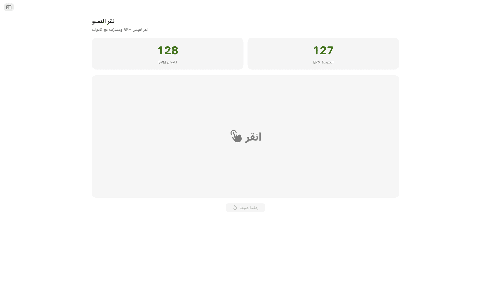
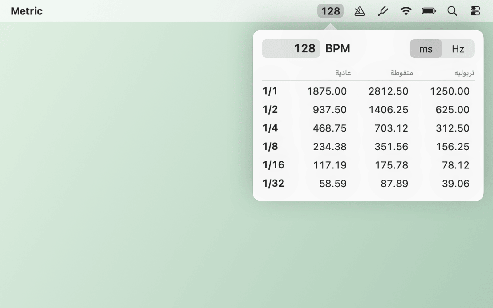
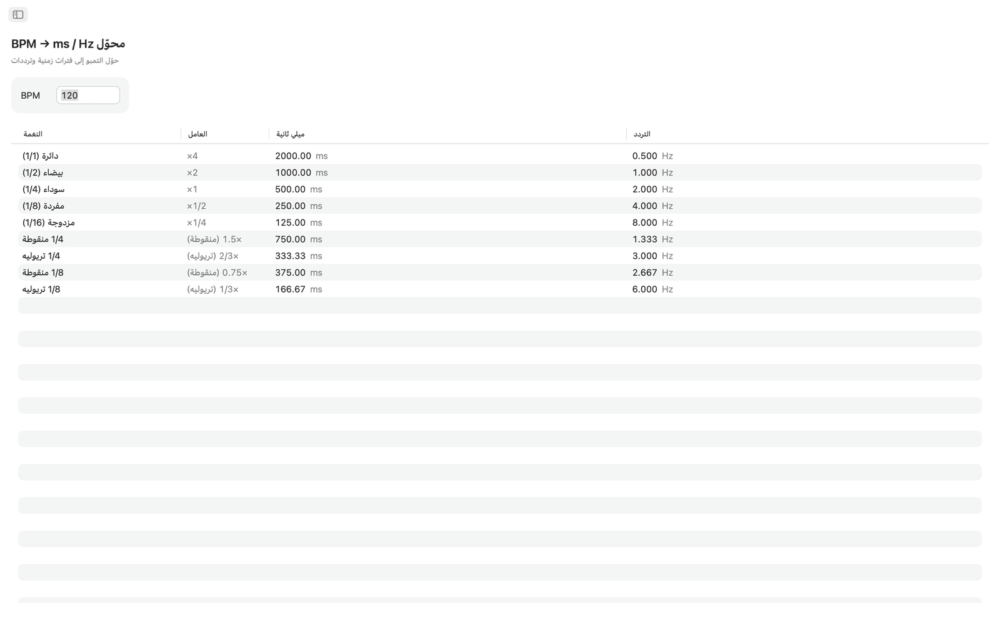
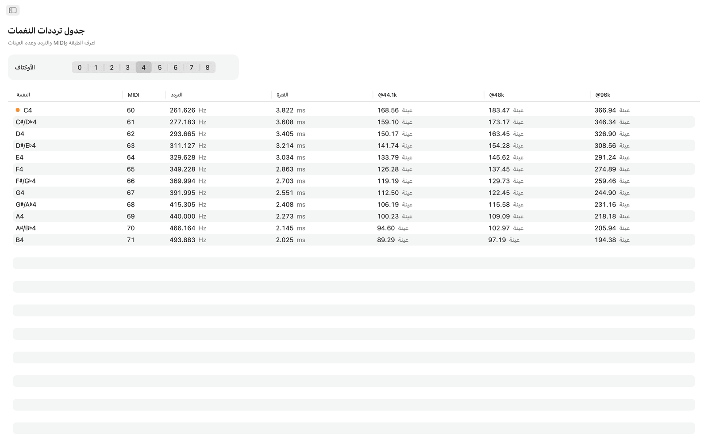
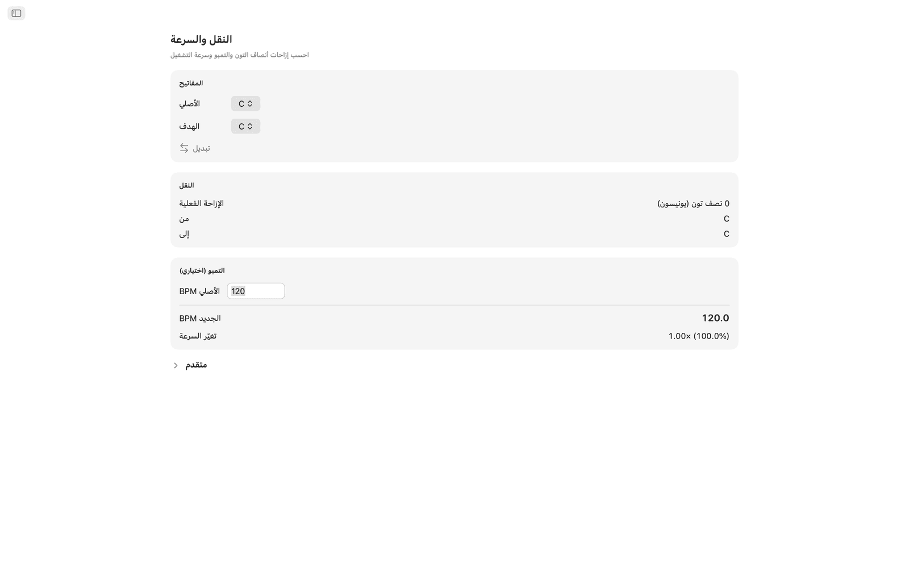
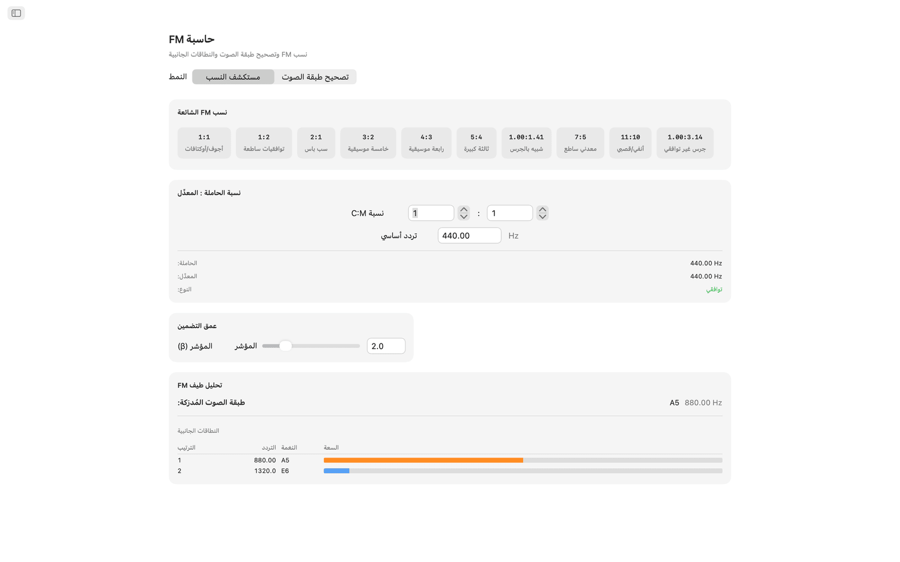
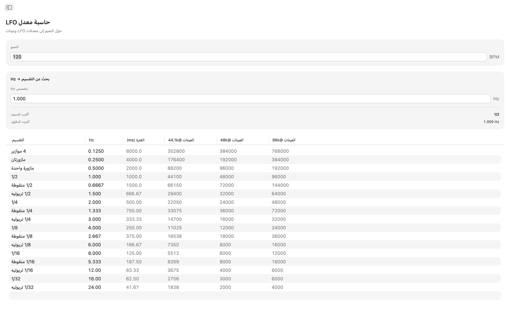
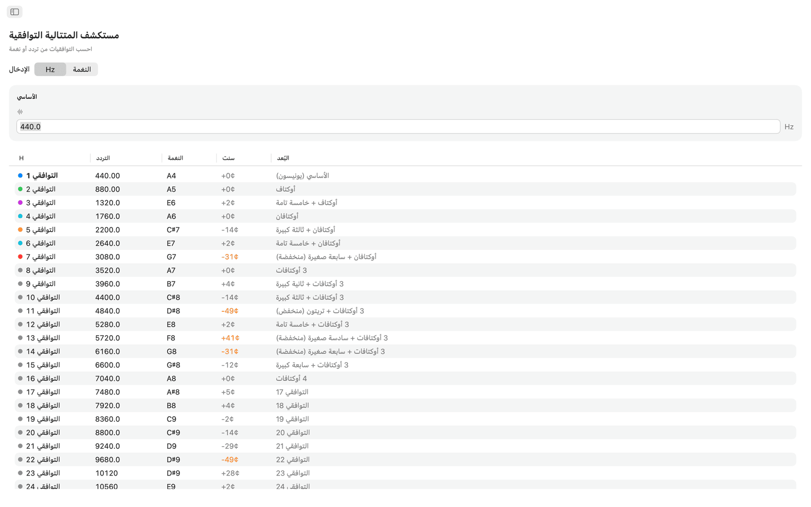
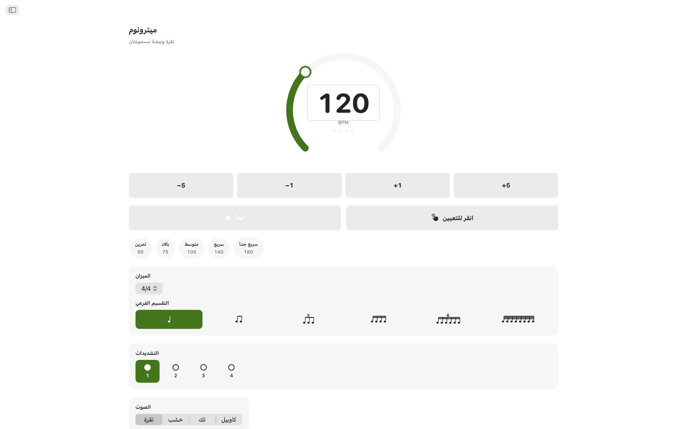
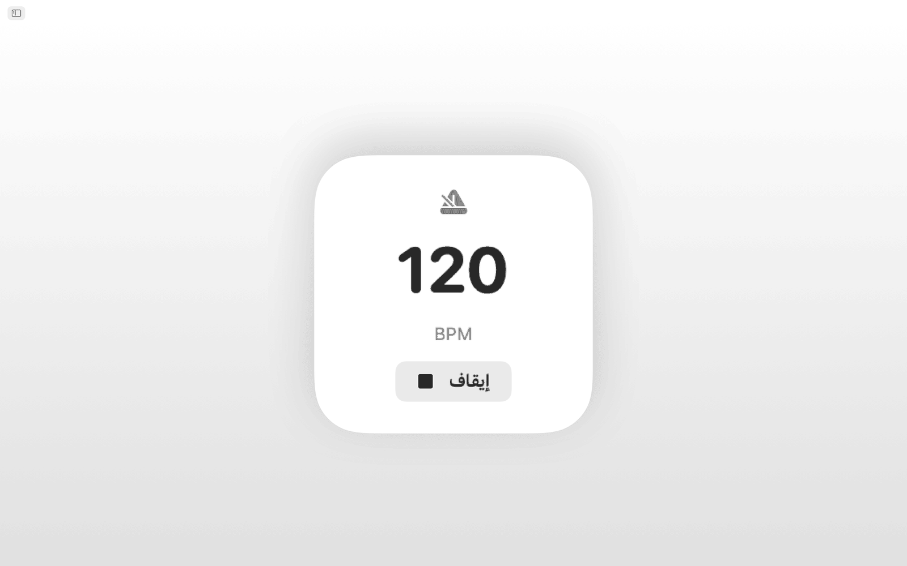
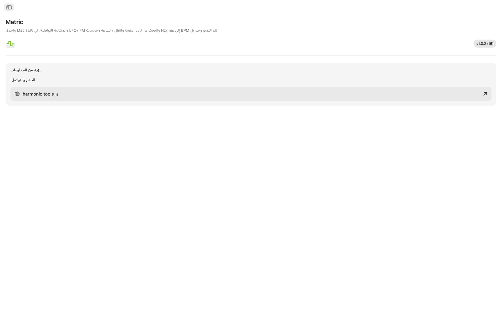
الميزات
- يضم الميترونوم قرص تمبو، وضبط التمبو بالنقر، وموازين وتقسيمات، ومؤشر نبضة مرئي.
- انقر على منطقة النقر الكبيرة لقياس التمبو. يعرض Metric قيمة BPM من آخر نقرة ومتوسطاً متحركاً لما يصل إلى ثماني نقرات، ويمكن إرسال أي من القراءتين مباشرة إلى أداة محوّل BPM أو النقل أو معدل LFO بنقرة واحدة.
- يأخذ محوّل BPM → ms / Hz تمبو ويعطي القيم العادية والمنقوطة والتريوليه للدائرة والبيضاء والسوداء والمفردة والمزدوجة. ويعرض كل صف الميلي ثانية والتردد بـ Hz، فتضبط التأخير أو التأخير المسبق للريفيرب أو توقيت السايدتشين دون آلة حاسبة.
- يسرد جدول ترددات النغمات النغمات الكروماتية الـ 108 من C0 إلى B8. وتعرض كل نغمة رقم MIDI والتردد بـ Hz والفترة بالميلي ثانية وعدد العينات عند 44.1 و48 و96 kHz. وتُميَّز دو الوسطى. وكل القيم مبنية على A4 = 440 Hz.
- للنقل، اختر مفتاحاً أصلياً ومفتاحاً مستهدفاً لترى الفرق بأنصاف التون واسم البُعد وقيمة النقل الدقيقة في DAW. أضف BPM الأصلي ليحسب Metric التمبو الجديد ونسبة سرعة التشغيل. ويتيح منزلق السنت (±100) ومنزلق للسرعة يمتد أوكتافين (±24 نصف تون) الضبط الدقيق.
- لحاسبة FM نمطان. يتيح مستكشف النسب ضبط نسب الحاملة والمعدِّل انطلاقاً من تردد أساسي، ويقدّم عشرة إعدادات مسبقة لـ FM، من الأوكتافات الجوفاء (1:1) إلى الأجراس غير التوافقية (1:π). ويعمل تصحيح طبقة الصوت بالعكس: اختر نغمة مستهدفة لتحصل على ترددَي الحاملة والمعدِّل بدقة. ويعرض النمطان جدول النطاقات الجانبية بما يصل إلى عشر جزئيات مع ترددها وأقرب نغمة لها وسعات مرمّزة بالألوان يحرّكها منزلق مؤشر التضمين.
- تحوّل حاسبة معدل LFO أي BPM إلى معدلات LFO عبر 17 تقسيماً موسيقياً، من أربع موازير نزولاً إلى تريوليه 1/32. ويعرض كل صف Hz والفترة بالميلي ثانية وعدد العينات في الدورة عند 44.1 و48 و96 kHz. ويتيح البحث العكسي إدخال أي قيمة Hz لإيجاد أقرب تقسيم موسيقي، مع إظهار الخطأ.
- يبدأ مستكشف المتتالية التوافقية من تردد أو من أي نغمة، ويسرد أول 32 توافقية مع التردد واسم أقرب نغمة والانحراف بالسنت واسم البُعد. وتُلوَّن التوافقيات ذات الرتب المنخفضة، وتُظلَّل الانحرافات الأكبر من 30 سنتاً، فيسهل اكتشاف المحتوى غير التوافقي.
تمبو ودوزنة مشتركان
انقر تمبو مرة واحدة فتستخدم أدوات محوّل BPM والنقل ومعدل LFO قيمة BPM الحية نفسها. وتعتمد ترددات النغمات وحاسبة FM والتوافقيات مرجع A4 = 440 Hz.
Siri والاختصارات وعنصر الواجهة
اطلب من Siri أن يبدأ الميترونوم أو يوقفه، أو يضبط BPM، أو يسجّل تمبو بالنقر، أو يحوّل BPM إلى ms، أو يجد تردد نغمة، أو ينقل تمبو. وكل أداة هي أيضاً إجراء في الاختصارات، ويُبقي عنصر BPM تمبوك في مركز الإشعارات.
أدوات شريط القائمة
سجّل تمبو بالنقر من شريط القائمة دون فتح التطبيق. انقر بزر الفأرة الأيمن لترى أزمنة التأخير بـ ms أو Hz، واكتب أي تمبو. وتتوفر اختيارياً عناصر الميترونوم وطبقة النغمة، إضافة إلى إعدادي وضع شريط القائمة فقط والفتح عند تسجيل الدخول.
على سطح المكتب
- يعمل دون اتصال بالكامل. بلا حساب ولا إعلانات ولا تتبّع
- تطبيق macOS أصلي بشريط جانبي للتنقل
- واجهة تتبع الوضع الداكن ومظهر النظام
- عدد العينات عند 44.1 و48 و96 kHz
- نافذة قابلة لتغيير الحجم. أبقها مفتوحة بجانب DAW
إمكانية الوصول
يعمل مع VoiceOver والتحكم بالصوت، ويمكن استخدامه من لوحة المفاتيح بمفاتيح الأسهم والمسافة.
Metric مجاني للتجربة لمدة 7 أيام. وبعد التجربة يكون الوصول الكامل عملية شراء لمرة واحدة، دون اشتراك.